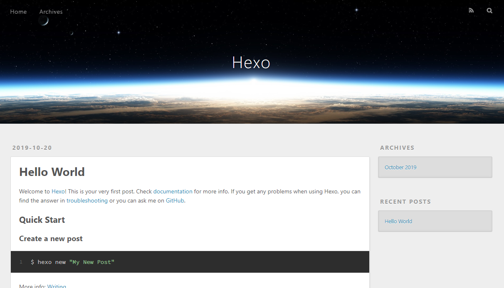
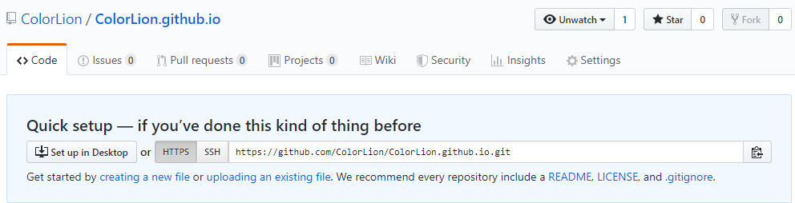
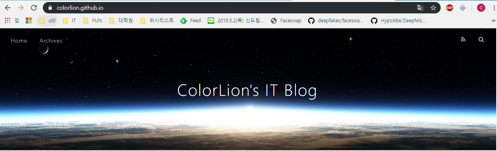

예전부터 카카오 기술 블로그나 네이버 D2 기술 블로그의 글들을 보면서 블로그를 시작해 보고싶었습니다. 처음부터 멋진 글을 쓰는 것은 불가능하다는 것을 잘 알기에 포스트를 하나하나 늘려가는 것 부터 시작하는 것을 목표로 삼고 시작하고자 합니다.
설치 전에
블로그를 시작할 때 고려한 것들
블로그를 시작하면서 Jekyll, Octopress 같은 정적 사이트 생성기(Static Site Generator)를 사용할지, 네이버 블로그, Tistory같은 블로그 플랫폼을 사용해야 하는가에 대한 고민을 했습니다. 이런 고민을 하다 보니 어떤 것을 사용해야 할지 감이 잡히지 않아 블로그를 만들 때 나의 요구사항을 목록화 했습니다.
- 마크다운(Markdown) 언어를 사용할 수 있는가?
- 포스트 생성 및 관리가 간편한가?
- 호스팅 비용은 무료거나 저렴한 편인가?
- 내 기준으로 설치와 커스터마이징이 간편한가?
위의 기준을 가지고 후보군을 찾았고 이들 중에서 제 기준에 가장 적합한 것을 사용하는 것으로 사용하자고 했고. 결론부터 말하면 Github + Hexo로 블로그 구축을 결정했습니다.
- Github + (jekyll or Hexo)
- Wordpress
- Tistory
왜 Hexo를 사용했나?
제 기준에 있어서 설치와 커스터마이징이 쉽다는 것이 크게 작용했습니다. jekyll은 ruby on rails를 기반으로 하기에 커스터마이징과 코드를 수정하기 위해서 따로 공부를 해야 하지만 Hexo는 node.js를 사용하기 때문에 추가적인 공부가 필요 없었기 때문입니다. 그와 더불어 Hexo 공식문서가 한글로 번역되어 있다는 점, 플러그인 적용이 쉽다는 것도 선택의 이유가 되었습니다.
Install
설치 환경은 다음과 같습니다
- windows10 버전 1903
- git version 2.22.0.windows.1
- node.js v10.16.3
Hexo 설치는 Git과 node.js가 설치되어 있었기에 npm을 사용해 설치했습니다.
1 | |
Init
블로그를 저장할 폴더와 블로그의 기본 구조를 만들었습니다.
1 | |
생성된 구조는 다음과 같습니다.
1 | |
Local Server로 확인
1 | |
localhost:4000으로 접속하면 블로그가 만들어진 것을 확인할 수 있습니다.

Deploy
배포는 github의 pages기능을 사용했습니다.
블로그 배포용 github repo 만들기

주의사항
- repo의 이름은 [username].github.io로 만들어야 합니다.
Deploy Setting
빌드된 결과물을 deploy하기 위해 hexo-deployer-git 플러그인을 설치하고 repo를 설정했습니다.
hexo-deployer-git 플러그인 설치
1 | |
블로그 설정파일(_config.yml) 설정
1 | |
배포
1 | |
배포 확인

참조